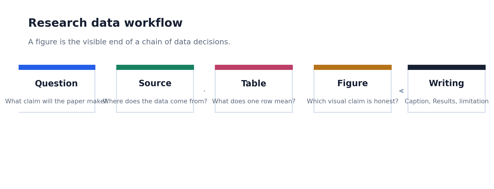
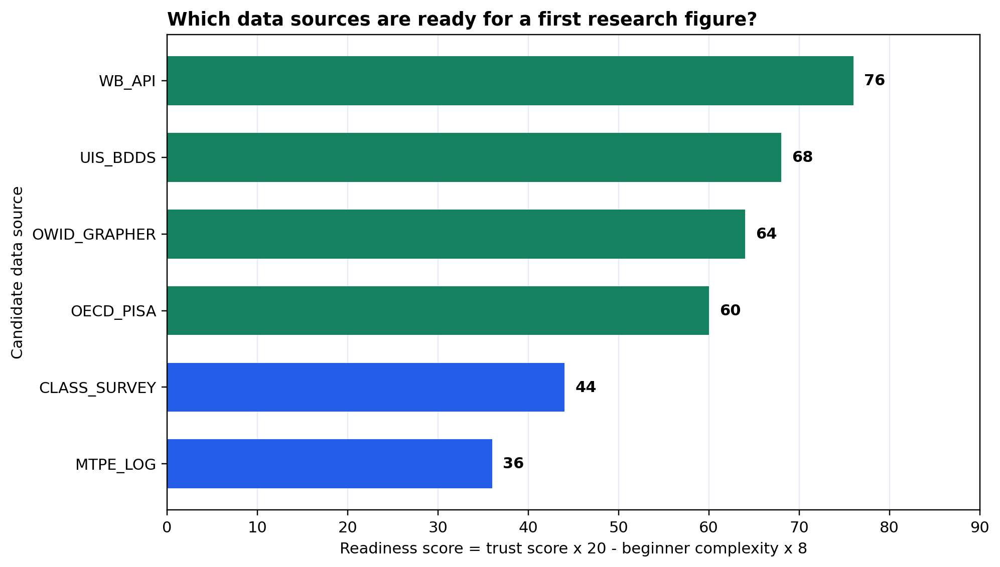

Data inventory
Liệt kê nguồn, format, unit of observation, rủi ro dữ liệu cá nhân và figure candidate.
List source, format, unit of observation, personal-data risk, and figure candidate.
Từ một paper idea đến data inventory, source note, figure đầu tiên và caption có limitation. Module này dành cho người chưa biết lập trình, nên mọi thứ bắt đầu bằng câu hỏi: một dòng dữ liệu nghĩa là gì?
From a paper idea to a data inventory, source note, first figure, and caption with a limitation. This module is for learners with no programming background, so everything starts with one question: what does one row mean?

Mục tiêu không phải là vẽ chart đẹp ngay từ đầu. Mục tiêu là hiểu dữ liệu đến từ đâu, biến thành bảng nào, hỗ trợ claim nào, và viết caption ra sao.
The goal is not to draw a beautiful chart immediately. The goal is to know where data comes from, what table it becomes, what claim it supports, and how to caption it.
Liệt kê nguồn, format, unit of observation, rủi ro dữ liệu cá nhân và figure candidate.
List source, format, unit of observation, personal-data risk, and figure candidate.
So sánh nguồn public và nguồn researcher-created bằng trust score và complexity.
Compare public and researcher-created sources using trust score and complexity.
Xuất một horizontal bar chart dưới dạng PNG, SVG và PDF.
Export one horizontal bar chart as PNG, SVG, and PDF.
Viết caption nêu source, measure, pattern và limitation.
Write a caption that states source, measure, pattern, and limitation.
Module 01 dùng CSV nhỏ để học workflow. Các nguồn lớn như UIS, World Bank, OWID, PISA được đưa vào như source inventory để đọc metadata và thảo luận độ sẵn sàng.
Module 01 uses small CSV files for workflow practice. Large sources such as UIS, World Bank, OWID, and PISA appear as a source inventory for reading metadata and discussing readiness.
Học khái niệm paper question, data role, unit of observation.
Learn paper question, data role, and unit of observation.
CSVSo sánh nguồn dữ liệu học thuật theo trust và complexity.
Compare academic data sources by trust and complexity.
CSVChuyển workflow sang education policy, TCSOL, contrastive và translation studies.
Transfer the workflow to education policy, TCSOL, contrastive work, and translation studies.
CSVMột học viên mới chỉ cần nắm chắc vài thao tác đầu: đọc CSV, xem kích thước bảng, xem vài dòng đầu, tạo một cột score, lưu bảng và figure.
A beginner only needs a few early moves: read CSV, inspect table size, preview rows, create one score column, and save a table and figure.
| Step | Python action | Paper meaning | Paper meaning |
|---|---|---|---|
| 1 | pd.read_csv() |
Mở bảng dữ liệu có thể tái lập. | Open a reproducible data table. |
| 2 | df.shape, df.head() |
Biết bảng có bao nhiêu dòng/cột và đang nói về cái gì. | Know how many rows/columns the table has and what it describes. |
| 3 | readiness_score = ... |
Biến tiêu chí lựa chọn source thành một rule rõ ràng. | Turn source-selection criteria into an explicit rule. |
| 4 | to_csv(), savefig() |
Tạo output có thể đưa vào paper package. | Create outputs that can enter a paper package. |

Figure này không cố chứng minh một claim lớn. Nó giúp học viên biết cách biến một bảng nhỏ thành output có label, scoring rule, export format và caption.
This figure does not try to prove a major claim. It teaches learners to turn a small table into an output with labels, a scoring rule, export formats, and a caption.
Nếu học viên trả lời được "một dòng trong bảng nghĩa là gì?" và "figure này hỗ trợ claim nào?", thì họ đã sẵn sàng học tidy data và codebook.
If the learner can answer "what does one row mean?" and "what claim does this figure support?", they are ready for tidy data and codebooks.
{kind=link}
{kind=link}